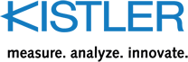
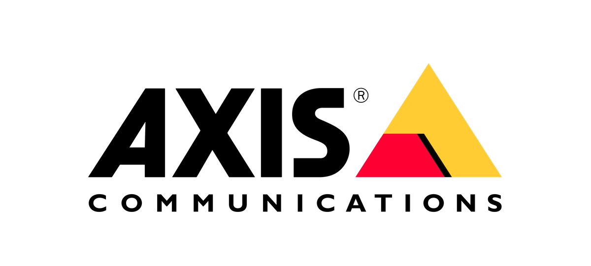

01
SCADA
Supervisión centralizada, adquisición de datos y control en tiempo real para túneles, corredores viales y centros de operación.
- Alarmas y eventos críticos
- Históricos, analítica y reportes
- Integración multi fabricante
Infraestructura crítica · Operación 24/7
Integramos control de tráfico, automatización y resiliencia tecnológica para que túneles y corredores viales operen con seguridad, visibilidad y disponibilidad permanente.
Un solo integrador. De la vía al centro de control y del dato a la recuperación.
Soluciones
Arquitecturas integradas para supervisar, controlar y proteger activos críticos desde una plataforma común.
Supervisión centralizada, adquisición de datos y control en tiempo real para túneles, corredores viales y centros de operación.
Automatización de sistemas electromecánicos en túneles y vías a cielo abierto para una operación segura, eficiente y coordinada.
Protección de entornos físicos, virtuales, nube y SaaS con copias aisladas e inmutables, detección de amenazas y recuperación limpia y orquestada para mantener disponibles los servicios críticos.
Capacidades
Conectamos sensores, sistemas y equipos de campo con plataformas de gestión y estrategias de continuidad. El resultado: decisiones más rápidas, riesgos controlados y servicio disponible cuando más importa.
Diseñemos su arquitectura ↗Diseño, suministro, integración y puesta en marcha.
Monitoreo, tableros y automatización de respuesta.
Protección, recuperación y continuidad verificable.
Partners
Un ecosistema especializado para construir soluciones confiables de movilidad, automatización, visión y ciberresiliencia.


Experiencia
Experiencia aplicada a concesiones viales y operaciones de alta exigencia.
Hablemos